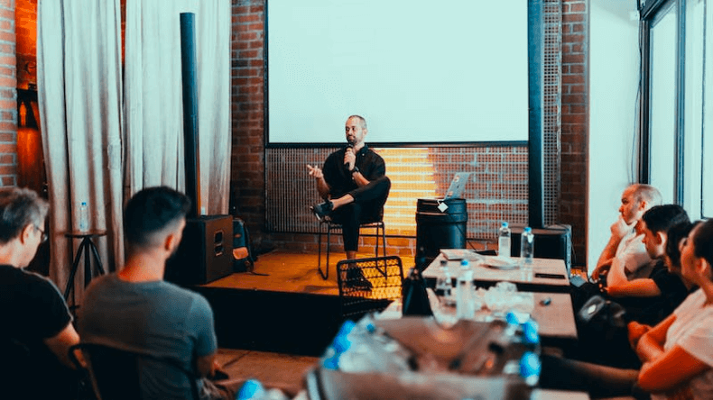

Lectures on Raman Spectroscopy Technology on Molecular Science Platform
When the steady-state transient fluorescence spectrometer FLS1000 has been running stably for one year, the spectrum laboratory of the public experimental platform for molecular science, in conjunction with Tianmei-Edinburgh Company, held the "Steady-state Transient Spectroscopy Technology Research" in Zhejiang More than 50 teachers and students from more than 10 universities including School of Science and Engineering of West Lake University, Zhejiang University, Zhejiang University of Technology, Institute of Oncology of Chinese Academy of Sciences, Hangzhou Normal University and Ningbo University participated in the seminar and meeting Mainly from the instrument principle, sample preparation and testing skills, we had an in-depth communication with users, and answered the intractable diseases encountered in the testing process. Teachers and students of all colleges and universities actively took advantage of this opportunity to discuss and learn from each other, and achieved good response.
When the steady-state transient fluorescence spectrometer FLS1000 has been running stably for one year, the spectrum laboratory of the public experimental platform for molecular science, in conjunction with Tianmei-Edinburgh Company, held the "Steady-state Transient Spectroscopy Technology Research" in Zhejiang More than 50 teachers and students from more than 10 universities including School of Science and Engineering of West Lake University, Zhejiang University, Zhejiang University of Technology, Institute of Oncology of Chinese Academy of Sciences, Hangzhou Normal University and Ningbo University participated in the seminar and meeting Mainly from the instrument principle, sample preparation and testing skills, we had an in-depth communication with users, and answered the intractable diseases encountered in the testing process. Teachers and students of all colleges and universities actively took advantage of this opportunity to discuss and learn from each other, and achieved good response.